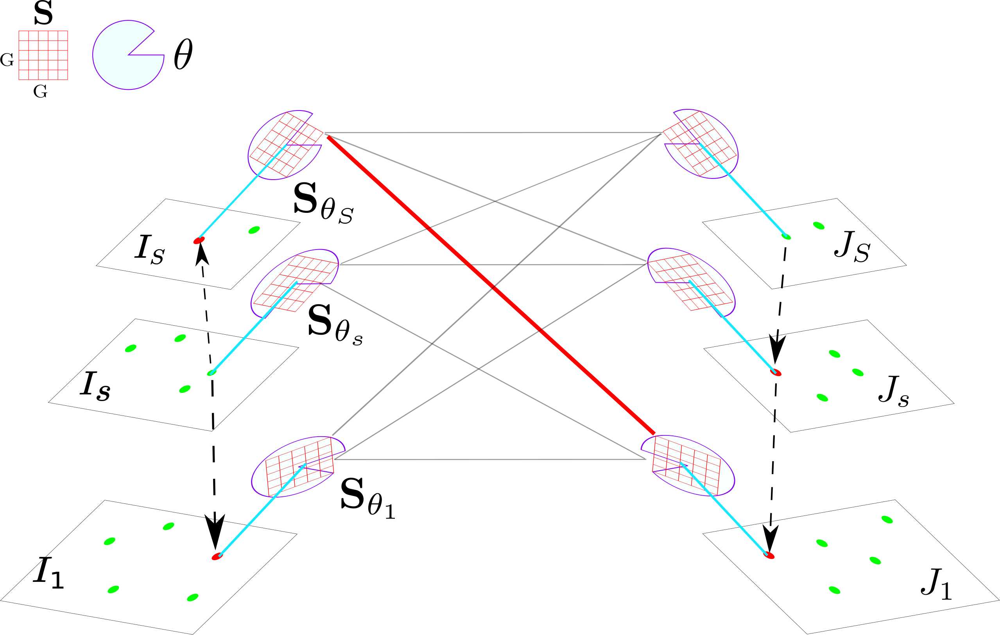

|
Lecture on Deep learning models for computer vision ECS709 - Introduction to Computer Vision (Winter 2022) Lecturer: Prof. A. Cavallaro Queen Mary University of London |
|
 |
Lecture on Interest Points ECS709 - Introduction to Computer Vision (Winter 2022) Lecturer: Prof. A. Cavallaro Queen Mary University of London |
 |
Tutorial on How to review scientific papers [More details] |
Demonstrator (former Postgraduate Teaching Assistant) at QMUL
ECS709 - Introduction to Computer Vision (2018/2019, 2019/2020)
Lecturer: Prof. A. Cavallaro
Number of students: 66 (2019/2020)
Number of students: 33 (2018/2019)